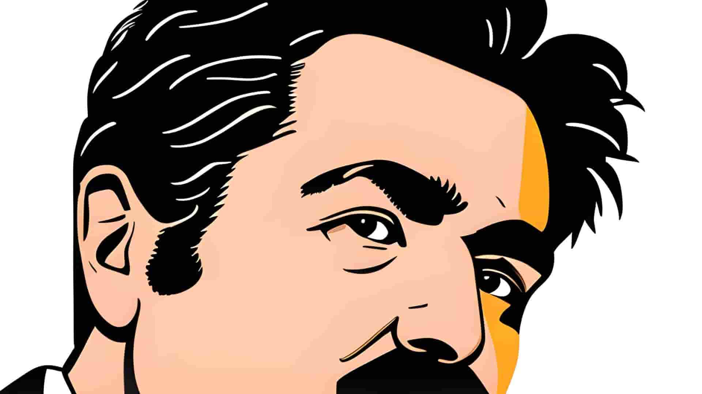

How to Set Good Goals for Yourself
You may not have given a lot of thought to the term “goal setting”. You may have a vague explanation of what it means to set a good goal, how to use the goal for maximum progress, and how to choose between your goals in order to achieve the most in a particular field you wish to explore and improve in. In my experience, there are three types of goals that can be used, each for different purposes, and they might not be what you expect. The important thing to remember is to try to follow these instructions as well as possible if you want to achieve the best possible results.
Table of contents
Basic Goals
The first type of goals I want you to think about is something I call basic-goals, which are goals that you expect to achieve and don’t really think about all that much. You may have used a resemblance of this type of goal while in school, like a form of “learning goals” that the teachers made up in order to have somewhat of an idea of what the students had to achieve and learn within a certain time period. This system is what a lot of people use in their day-to-day lives, especially at work. However, this system isn’t all that effective, especially in private.
If you want to read more, would you set a goal for yourself that says something along the lines of? : “I have to read one half book within a timespan of two months.” Or would you set something like this? : “I have to read fifteen books within the next four months, but since that goal is difficult for me to achieve, I will not get disappointed if I cannot do it” If you set an incredibly low goal for yourself, you will not be worried about not achieving it, as you are better than the goal. You just won’t be bothered to start, especially if no one knows about your goal and no one is holding you accountable.
However, if you set an ambitious and incredibly high goal while not being worried about achieving it, but rather being worried about not achieving your best potential you will get far longer along the road than if you had picked the other option. If you set a goal that you know you will achieve, you will never live up to your potential. The basic goal-type is therefore the worst alternative, and you should definitely not use this one, and definitely not privately! The better alternative is something I call a Maximum-Potential-Goal. Which brings me to the next paragraph:

Maximum Potential Goals
The Maximum-potential-goal is the second alternative I used in the last paragraph of setting a high goal. The trick with this type of goal is to do your very best, and not get discouraged if you fail to live up to the goal, but rather get motivated for more goals and more progress. The reason behind the name of this goal is that without expanding your belief of what actually is possible according to your potential, you’ll only achieve a small amount of progress and improvement. Say you believe the maximum amount of pushups you can do is thirty, and you want to set a new PR with thirty-one, but in reality, the maximum amount of pushups you can do is fifty, then you’ll still stop at thirty-one! You lived up to both your goal and your potential, right? No. That is the trick with a Maximum-Potential-Goal.
Let’s go back to the pushup analogy for a second: If you’d’ve said you could do a hundred pushups, but would have been satisfied with thirty-one, and your body’s absolute maximum (current maximum, that is; meaning the physical state your body is in right now) physical potential was fifty, you would have been mighty proud, even if you didn’t do a hundred pushups, you lived up to your full potential, right? That is the reason why this goal-setting method is so effective, you both live up to your potential, and you get more progress than you normally would! Isn’t it great? You could also try aiming right in between the basic-goal and a goal that is absolutely unachievable. This is the goal-type to choose if you:
Maximum Progress in Any Field
The third and last goal-setting method I want to talk about is the one I’d use for the most amount of progress in any field, as it is based on cutting out all other distracting goals in order to get the most out of the one you need to complete. The first step is to set a few goals that match what you’d set for a Maximum-Progress-Goal. Try to put down ten goals that would be nice to achieve, but make sure that they’re all big and important. Then, when you’ve got them all written down, circle one, (maybe two or even three, but that’ll slow your focus and ability to get as much work as possible done within your timeframe.) and then, when you’ve got it/them circled, X out all the other ones.
Using discipline and incredible focus on one goal for a short period of time is what a lot of people would refer to as monk mode, which is a small period of time used to get maximum progress in a particular field. This brings me on to the next point, where I’ll talk about the importance of daily systems.
Importance of Daily Systems
Using goals to achieve major things will work wonders for you, really. The thing is, however, that you need to focus on what your habits and work-systems are as well, otherwise, you will be stuck changing your goals, not achieving them, and not seeing the real problem. The reason behind making goals is that you need something to nudge you in the right direction. This is what your goals will do for you, but when you’ve already made the goals, you should also focus on how you can optimize everything you do to serve you in achieving your goal(s).
For example, you ought to focus on how well you do your work; say your goal has to do with improving your personal finances and performance at work. (Assuming you use your brain for work, that is.) You could start by cutting out alcohol, as alcohol decreases your work performance and empties your wallet. Then, you could try implementing meditation in your life, making you more focused when needed. Then, you could get more fit and into better shape, and then, you could start viewing videos on neuroscience and how to optimize your work and your environment for productivity.

After all that, you could learn other, smaller things like how to type faster, how to think faster, how to do things more effectively, and so on and so on. You start by looking at your routine and daily habits after setting the goals in order to achieve as much as possible.
The last thing to remember is that you should not get disappointed when you fail to achieve a goal, only remember that it is important to try harder the next time. Good Luck!